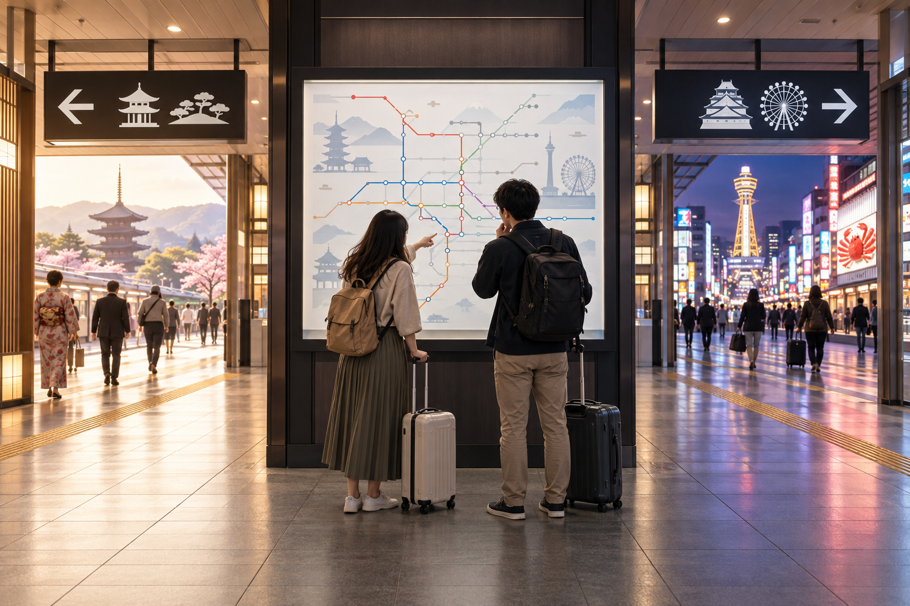
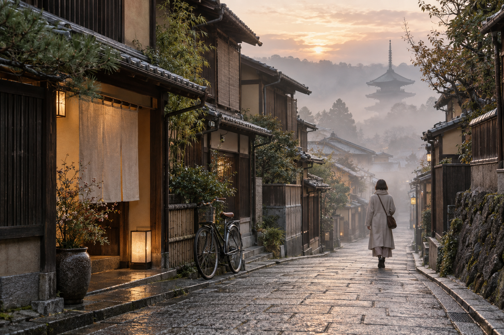
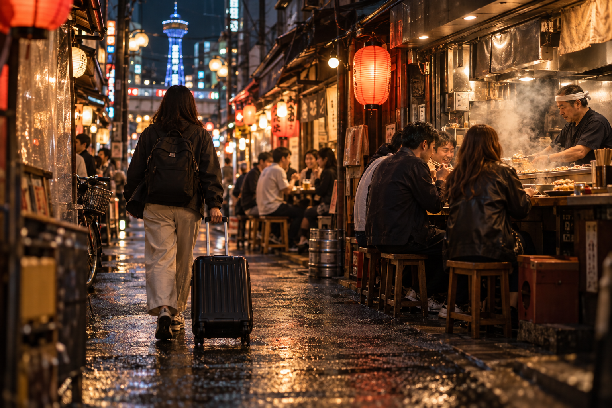

Kyoto vs Osaka: Which Is the Better Base
Kyoto and Osaka are close enough by train that many first-time visitors wonder whether they really need to stay in both cities. You can sleep in Osaka and take day trips to Kyoto, or stay in Kyoto and travel to Osaka. Both strategies work. The better choice depends on what you want to do early in the morning, where you want to spend your evenings, and how many sightseeing days you plan in each city.
For most first-time visitors, I would not choose one city as a base simply to avoid changing hotels. If you plan two or three full days in Kyoto and two or three full days in Osaka, staying in both cities usually gives you the better trip. Kyoto rewards early mornings and quieter evenings around historic districts, while Osaka becomes especially enjoyable after dark with food, shopping, and nightlife.
If you must choose only one base, use a simple rule: stay in Kyoto when Kyoto is the main purpose of the trip; stay in Osaka when Osaka, nightlife, or multiple Kansai day trips matter more.
Kyoto vs Osaka Base: Quick Verdict

| Travel Priority | Better Base |
|---|---|
| First trip focused on Kyoto | Kyoto |
| 2–3 full Kyoto sightseeing days | Kyoto |
| Food and nightlife | Osaka |
| Early temples and shrines | Kyoto |
| Gion /Higashiyama mornings and evenings | Kyoto |
| Nara + Kobe + wider Kansai trips | Osaka |
| Osaka nightlife after sightseeing | Osaka |
| Traditional atmosphere | Kyoto |
| Modern city convenience | Osaka |
| Ryokan experience | Kyoto |
| More restaurant choices late at night | Osaka |
| Fast regional rail connections | Osaka |
| Kyoto-heavy family trip | Kyoto |
| USJ-focused trip | Osaka |
| Equal time in both cities | Stay in both |
For a typical first Japan itinerary, my default recommendation is:
Kyoto nights for Kyoto sightseeing → move to Osaka → Osaka nights for Osaka sightseeing.
The Most Important Rule: Stay Where You Spend Most of Your Days
The cities are close.
Your attractions are not necessarily close to the station.
That distinction matters.
A fast train from Osaka to Kyoto does not mean:
Osaka hotel → Kiyomizu-dera in 30 minutes.
You still need to account for:
- ✓Hotel to Osaka station
- ✓Waiting
- ✓Train
- ✓Arrival at Kyoto
- ✓Transfer within Kyoto
- ✓Walking
- ✓Crowds
The same applies in the opposite direction.
This is why city-to-city train time should never be the only factor in your base decision.
How Close Are Kyoto and Osaka?
The fastest conventional JR connection between Osaka Station and Kyoto Station is around half an hour.
Other useful city-center routes include private railways.
For example, depending on your starting and ending areas, you may use routes linking:
- ✓Osaka-Umeda and Kyoto-Kawaramachi
- ✓Yodoyabashi and Sanjo
- ✓Osaka and Kyoto stations
These alternatives matter because not every traveler wants to go:
Osaka Station → Kyoto Station.
If your Osaka hotel is near Umeda and your Kyoto destination is downtown, Hankyu may place you closer to where you actually want to be.
If your Kyoto destination is around eastern Kyoto, another railway may make more sense.
Train Time Is Not the Same as Sightseeing Time
This is the biggest mistake in Kyoto-vs-Osaka base planning.
Imagine that your Osaka hotel is near Namba and you want to reach Kiyomizu-dera.
Your morning may involve:
- ✓Hotel to station
- ✓Osaka transport connection
- ✓Osaka-to-Kyoto train
- ✓Kyoto local transport
- ✓Final uphill walk
The actual trip can be much longer than the headline intercity train time.
Now compare that with staying in:
Gion or Higashiyama
and beginning the morning on foot.
That is why accommodation location matters more than the distance between Kyoto and Osaka on a map.
When Kyoto Is the Better Base

Choose Kyoto when the Kyoto experience itself is the main reason you are in Kansai.
This is especially true if your itinerary includes several of these:
- ✓Fushimi Inari
- ✓Kiyomizu-dera
- ✓Higashiyama
- ✓Gion
- ✓Arashiyama
- ✓Kinkaku-ji
- ✓Ryoan-ji
- ✓Nijo Castle
- ✓Nishiki Market
Kyoto's major sights are spread across different parts of the city.
Staying there does not eliminate local transport, but it removes the extra Osaka-to-Kyoto commute before that local sightseeing even begins.
Kyoto Is Better for Early-Morning Sightseeing
This may be the strongest reason to sleep in Kyoto.
Several major Kyoto experiences are better earlier in the day.
Examples include:
- ✓Fushimi Inari
- ✓Arashiyama
- ✓Higashiyama streets
An Osaka-based traveler has to reach Kyoto before beginning the local journey.
A Kyoto-based traveler is already there.
That gives you a major advantage if avoiding the busiest periods matters.
Example: Early Fushimi Inari
If you stay near Kyoto Station, reaching Fushimi Inari can be very quick by local rail.
If you stay in Osaka, you first need to travel to Kyoto before beginning the local part of the trip.
The attraction itself has not moved.
Your hotel has simply created an additional commute.
Example: Early Higashiyama
This difference becomes even stronger if you stay around:
Gion / Higashiyama.
You may be able to start walking among historic streets while travelers from other cities are still on trains.
That is not something an Osaka base can reproduce.
Kyoto Is Better for Historic Evening Atmosphere
Kyoto is not only about starting early.
Staying there also gives you access after the daytime sightseeing crowds begin leaving.
Depending on your accommodation area, your evening may include:
- ✓Gion
- ✓Higashiyama
- ✓Kamo River
- ✓Pontocho
- ✓Downtown Kyoto
- ✓Quiet historic streets
This is a different experience from visiting Kyoto during the day and leaving for Osaka before the evening fully develops.
Kyoto Is Better if You Want a Ryokan
If a traditional accommodation experience is important, Kyoto has a particularly strong reason to keep you overnight.
You may want:
- ✓Tatami room
- ✓Futon
- ✓Traditional meals
- ✓Machiya-style property
- ✓Ryokan hospitality
In that case, accommodation is no longer simply a bed.
It becomes part of the Kyoto experience.
Our Where to Stay in Kyoto: Best Areas for First-Time Visitors guide compares Kyoto Station, Downtown Kyoto, Gion/Higashiyama, Shijo-Karasuma, Arashiyama, and the other main bases in detail.
Kyoto Is Usually Better for Two or Three Full Kyoto Days
Suppose your itinerary contains:
Day 1
Fushimi Inari + Higashiyama + Gion
Day 2
Arashiyama
Day 3
Kinkaku-ji + central Kyoto
Commuting from Osaka each morning adds the same intercity step three separate times.
Then you travel back to Osaka three separate evenings.
That is a lot of repeated transport just to avoid one hotel change.
Hotel Changes Take Time, but So Does Daily Commuting
Travelers sometimes avoid moving hotels because they think:
“Changing hotels wastes half a day.”
It does not need to.
With good planning, you can:
- ✓Check out
- ✓Forward or store luggage
- ✓Travel to Osaka
- ✓Continue sightseeing
You make the city-to-city transfer once.
Compare that with commuting between Osaka and Kyoto:
morning + evening
for several consecutive days.
In many Kyoto-heavy itineraries, changing hotels is actually the more efficient option.
Kyoto's Sightseeing Geography Favors Sleeping There
Kyoto's official tourism guidance divides sightseeing across:
- ✓Central Kyoto
- ✓Eastern Kyoto
- ✓Western Kyoto
- ✓Northern Kyoto
- ✓Southern Kyoto
Even from Kyoto Station, official broad travel estimates to major sightseeing zones range from roughly:
- ✓10 minutes to Fushimi Inari
- ✓20 minutes to downtown
- ✓25 minutes to Saga/Arashiyama
- ✓35 minutes to Kiyomizu/Higashiyama
- ✓40 minutes to Kinkaku-ji
Those are already local journeys.
Starting in Osaka adds another layer before them.
That is the core reason Kyoto is the better base for a Kyoto-heavy itinerary.
When Osaka Is the Better Base

Choose Osaka when your trip is not primarily about Kyoto.
Osaka becomes especially strong when you want a mixture of:
- ✓Osaka sightseeing
- ✓Food
- ✓Nightlife
- ✓Nara
- ✓Kobe
- ✓Himeji
- ✓USJ
- ✓Shopping
- ✓Regional transport
Osaka's major transport hubs make it an excellent jumping-off point for wider Kansai travel.
Osaka Is Better for Regional Day Trips
Osaka provides particularly strong access toward multiple destinations.
Depending on where you stay, you can find convenient rail connections toward:
- ✓Kyoto
- ✓Nara
- ✓Kobe
- ✓Himeji
That makes Osaka a good base for a trip where no single destination dominates.
For example:
Day 1
Osaka
Day 2
Nara
Day 3
Kobe
Day 4
Osaka
This is exactly the type of trip where Osaka becomes a strong single-base option.
Umeda Is Especially Strong for Regional Transport
If day trips are important, staying around:
Umeda / Osaka Station
can simplify the trip.
You have access to several railway networks and useful connections toward other Kansai cities.
This is one of the reasons Umeda can be a better base than Namba for travelers who plan to leave Osaka frequently.
Osaka Is Better for Nightlife
This is the clearest advantage Osaka has over Kyoto for many travelers.
After a day trip, you can return to:
- ✓Namba
- ✓Dotonbori
- ✓Shinsaibashi
- ✓Umeda
- ✓Shinsekai
and the evening still feels like part of the trip.
Osaka's food and entertainment districts are active later and offer more variety for travelers who like to stay out.
If you care strongly about:
- ✓Bars
- ✓Casual restaurants
- ✓Neon streets
- ✓Late shopping
- ✓Izakaya
Osaka is the more natural base.
Osaka Is Better for Food-Focused Travelers
Kyoto has excellent food.
But Osaka is easier for travelers who want a casual, food-centered city base.
You can build evenings around:
- ✓Takoyaki
- ✓Okonomiyaki
- ✓Kushikatsu
- ✓Sushi
- ✓Yakiniku
- ✓Izakaya
without treating dinner as a carefully scheduled event.
A traveler who wants to spend the day sightseeing elsewhere and return to a lively food district each evening may strongly prefer Osaka.
Osaka Can Be Better for a Wider Kansai Trip
The strongest case for Osaka is not:
“Kyoto is close.”
It is:
“I am visiting several different Kansai destinations.”
If your trip includes:
- ✓One Kyoto day
- ✓One Nara day
- ✓One Kobe day
- ✓Two Osaka days
then changing hotels repeatedly makes little sense.
Use Osaka as the base.
Osaka Is Also Better for USJ
If Universal Studios Japan is a major part of the trip, Osaka naturally becomes more attractive.
A Kyoto hotel means adding an intercity transfer before and after an already long theme-park day.
That is unnecessary when you can sleep much closer.
Namba vs Umeda Matters When Using Osaka as a Base
Choosing Osaka is only half the decision.
The next question is:
where in Osaka?
Choose Umeda If:
- ✓Kyoto day trips matter
- ✓Kobe matters
- ✓Regional rail matters
- ✓Transport comes first
Choose Namba If:
- ✓Nara matters
- ✓KIX access matters
- ✓Food and nightlife matter
- ✓You want Dotonbori nearby
Our Where to Stay in Osaka: Best Areas for First-Time Visitors compares these bases along with Shinsaibashi, Tennoji, Hommachi, Shin-Osaka, and Universal City.
Kyoto vs Osaka for Evenings
This is one of the easiest ways to choose.
Ask:
What kind of evening do I want after sightseeing?
Stay in Kyoto If You Want:
- ✓Historic streets
- ✓Gion
- ✓Pontocho
- ✓Kamo River
- ✓Quieter atmosphere
- ✓Traditional dining
- ✓Earlier nights
Stay in Osaka If You Want:
- ✓Dotonbori
- ✓Neon
- ✓Bars
- ✓Casual food
- ✓Shopping
- ✓More late-night activity
Neither city wins universally.
They serve different evening styles.
Kyoto vs Osaka for Mornings
Now ask the opposite question.
Kyoto Is Stronger for:
- ✓Early Fushimi Inari
- ✓Early Arashiyama
- ✓Higashiyama before peak crowds
- ✓Temple-heavy sightseeing
Osaka Is Stronger for:
- ✓Easier start to regional day trips
- ✓USJ
- ✓Urban sightseeing
- ✓Later morning starts
Kyoto often rewards getting out early.
Osaka is generally more forgiving if your day begins later.
If Kyoto Is Your Main Destination, Do Not Commute Just to Avoid Moving Hotels
This deserves a clear recommendation.
If you plan:
3 Kyoto days + 1 Osaka day
I would stay in Kyoto.
Do not sleep in Osaka for four nights merely because the hotel is cheaper or you dislike changing accommodation.
You will create repeated commuting on the three days that matter most.
If Osaka Is Your Main Destination, the Reverse Is Also True
If your itinerary is:
3 Osaka days + 1 Kyoto day
stay in Osaka.
One Kyoto day trip is perfectly reasonable.
There is no need to move hotels for a single excursion.
The 2-Day Rule
A useful first-time planning rule is:
If you have two or more full sightseeing days in a city, seriously consider sleeping there.
It is not absolute.
But it works surprisingly well.
1 Kyoto Day
Osaka base can work.
2–3 Kyoto Days
Stay in Kyoto.
1 Osaka Day
Kyoto base can work.
2–3 Osaka Days
Stay in Osaka.
This protects both early mornings and evenings without creating unnecessary hotel moves.
If You Spend Equal Time in Kyoto and Osaka
Stay in both.
For example:
3 nights Kyoto + 3 nights Osaka
is usually better than:
6 nights Osaka with three Kyoto commutes
or:
6 nights Kyoto with three Osaka commutes.
You gain:
- ✓Kyoto mornings
- ✓Kyoto evenings
- ✓Osaka nightlife
- ✓Less repeated rail travel
The one city-to-city hotel move is usually a reasonable trade.
Why Staying in Both Cities Is Not “Too Much Moving”
Kyoto and Osaka are close.
That makes changing bases relatively easy.
You are not making a long domestic flight or spending half a day on a train.
With luggage storage or forwarding, the transfer can be integrated into the trip.
The mistake is assuming:
one hotel = automatically more efficient.
Sometimes it is.
Sometimes it simply replaces one hotel change with several daily commutes.
My First-Time Recommendation
For the classic first Japan route:
Tokyo → Kyoto → Osaka
I would usually keep that order and stay in each destination.
Kyoto gets:
- ✓Early cultural sightseeing
- ✓Historic evenings
- ✓Several geographically spread sightseeing days
Osaka then gives you:
- ✓Food
- ✓Nightlife
- ✓Shopping
- ✓Easier Kansai regional connections
- ✓Possible KIX departure
That creates a more complete Kansai experience than choosing one city only because the train between them is fast.
Kyoto vs Osaka for Families
For families, the better base depends less on nightlife and more on:
- ✓Daily transport
- ✓Room size
- ✓Early starts
- ✓Food flexibility
- ✓Children’s energy
- ✓How many attractions require transfers
If most of your planned sightseeing is in Kyoto, I would stay in Kyoto.
Repeated Osaka-to-Kyoto commuting can turn an already busy sightseeing day into a longer one, especially when children are tired by late afternoon.
Why Kyoto Can Be Better for Families
Staying in Kyoto makes it easier to:
- ✓Start major sights earlier
- ✓Return to the hotel for a break
- ✓Avoid an extra intercity train twice a day
- ✓Have an earlier dinner
- ✓Shorten a day when children are tired
This becomes especially useful if you plan:
- ✓Fushimi Inari
- ✓Arashiyama
- ✓Higashiyama
- ✓Kinkaku-ji
across several days.
Why Osaka Can Be Better for Families
Choose Osaka when the family itinerary includes more variety.
For example:
- ✓Universal Studios Japan
- ✓Osaka sightseeing
- ✓Nara
- ✓Shopping
- ✓Aquarium
- ✓Shorter Kyoto visit
Osaka also gives families a large choice of:
- ✓Modern hotels
- ✓Shopping centers
- ✓Casual restaurants
- ✓Indoor activities
Umeda and Tennoji can be particularly practical family bases.
Family Verdict
Mostly Kyoto sightseeing
Stay in Kyoto.
Osaka + USJ + other Kansai trips
Stay in Osaka.
Two or more full days in each city
Split the stay.
Kyoto vs Osaka for Couples
Couples can reasonably choose either city because the difference is more about atmosphere than basic convenience.
Choose Kyoto for:
- ✓Gion evenings
- ✓Traditional streets
- ✓Ryokan
- ✓Quiet walks
- ✓Historic atmosphere
- ✓Temple-focused trip
Kyoto is stronger if the accommodation itself is part of the experience.
A ryokan or machiya-style stay can make sleeping in Kyoto worthwhile even when Osaka is technically convenient enough for a day trip.
Choose Osaka for:
- ✓Food
- ✓Bars
- ✓Late-night restaurants
- ✓Dotonbori
- ✓Shopping
- ✓More active evenings
A couple that likes staying out late may prefer Osaka.
Couples Verdict
For a romantic, traditional first Japan experience:
Kyoto
For food, nightlife, and city energy:
Osaka
For four or more Kansai nights split fairly evenly between both cities:
stay in both.
Kyoto vs Osaka for Food Travelers
Osaka is the easier default.
That does not mean Kyoto has weak food.
Kyoto has excellent:
- ✓Kaiseki
- ✓Tofu cuisine
- ✓Traditional sweets
- ✓Tea
- ✓Nishiki Market
- ✓Seasonal dining
But Osaka makes spontaneous eating easier.
A food-focused traveler can return from sightseeing and still have large concentrations of restaurants around:
- ✓Namba
- ✓Dotonbori
- ✓Shinsaibashi
- ✓Umeda
- ✓Shinsekai
Choose Kyoto If Food Means:
- ✓Traditional dining
- ✓Kaiseki
- ✓Tea culture
- ✓Kyoto specialties
- ✓Historic restaurant atmosphere
Choose Osaka If Food Means:
- ✓Casual eating
- ✓Multiple stops
- ✓Street food
- ✓Izakaya
- ✓Late dinner
- ✓Takoyaki
- ✓Okonomiyaki
- ✓Kushikatsu
Food Verdict
For most food-focused first-time visitors:
Osaka is the stronger single base.
But if your days themselves are Kyoto-heavy, do not accept long daily commutes only to have dinner in Osaka.
Stay in Kyoto and dedicate Osaka nights later in the trip.
Kyoto vs Osaka for Budget Travelers
This comparison is less simple than:
Osaka is cheaper.
Hotel prices change with:
- ✓Season
- ✓Weekend
- ✓Events
- ✓Cherry blossoms
- ✓Autumn foliage
- ✓Room type
- ✓How early you book
You should compare actual properties for your dates.
Osaka Can Offer More Accommodation Variety
Osaka has a large supply of:
- ✓Business hotels
- ✓Budget hotels
- ✓Hostels
- ✓Apartment-style stays
across areas such as:
- ✓Hommachi
- ✓Tennoji
- ✓Shin-Imamiya
- ✓Umeda
- ✓Namba
That can make it easier to find value.
But a Cheap Osaka Hotel Can Cost You Time
Suppose an Osaka hotel saves money each night, but you plan three Kyoto sightseeing days.
You now add:
- ✓Osaka station journey
- ✓Intercity train
- ✓Kyoto local transport
every morning, and repeat the trip in reverse at night.
The cheaper hotel may no longer represent better value.
Budget Rule
Compare:
hotel price + local transport + intercity transport + time
rather than nightly room rate alone.
Budget Verdict
For a Kyoto-heavy trip:
book the best-value Kyoto hotel you can reasonably find.
For a mixed Kansai trip:
Osaka often gives you more budget flexibility.
Kyoto vs Osaka if You Fly Through Kansai International Airport
Both cities can work from KIX.
The question is what happens after the airport transfer.
KIX to Kyoto
Kyoto has a major advantage for travelers who want to go directly from the airport into their Kyoto stay.
The JR Haruka provides a direct airport-to-Kyoto connection.
Current official guidance puts the direct journey at roughly:
80 minutes
to Kyoto Station on the faster services.
That means you do not need to sleep in Osaka simply because KIX is called Kansai International Airport.
KIX to Osaka
Osaka gives you several useful choices depending on the hotel area.
Namba
Nankai Railway provides a straightforward airport connection.
Umeda / Osaka Station
JR and airport-bus options are useful.
Tennoji
JR airport services make Tennoji particularly practical.
If You Land at KIX and Kyoto Comes First
Go directly to Kyoto.
There is usually no reason to:
KIX → Osaka hotel → Kyoto the next morning
if Kyoto is already your next destination.
If You Fly Home From KIX After Osaka
This is a strong reason to put Osaka last.
A route such as:
Tokyo → Kyoto → Osaka → KIX
works naturally for many first-time visitors.
You get Kyoto mornings first, Osaka evenings later, then a simpler final airport departure.
Should You Stay in Osaka for an Early KIX Flight?
Often, yes.
Especially if your last hotel is in:
- ✓Namba
- ✓Tennoji
- ✓Umeda
But check the actual first train or bus against your flight time.
For a very early international departure, an airport-area hotel for the final night may sometimes be safer than either central Kyoto or central Osaka.
Do not move near the airport several nights early.
Kyoto vs Osaka if You Arrive by Shinkansen From Tokyo
Kyoto has one important advantage:
Tokyo–Kyoto Shinkansen trains stop directly at Kyoto Station.
If Kyoto is first on your Kansai plan, simply get off there.
There is no reason to continue to Osaka and commute backward the next morning.
If Osaka Comes First
Continue by Shinkansen to:
Shin-Osaka
then transfer to your Osaka accommodation.
Remember that Shin-Osaka is not the same as:
- ✓Osaka Station
- ✓Umeda
- ✓Namba
For the full bullet-train process, reservations, luggage, and boarding, see Shinkansen Guide: How to Use Japan's Bullet Trains.
Kyoto vs Osaka if You Travel Next to Hiroshima
Osaka can have an advantage because the Sanyo Shinkansen runs from Shin-Osaka toward Hiroshima.
But Kyoto also has direct Shinkansen options toward western Japan on suitable services.
The bigger decision should still be:
where do you want to spend the nights before departure?
Do not choose a hotel for three nights solely to save one transfer on departure morning.
Kyoto vs Osaka for Nara Day Trips
Both cities can work.
That is important because travelers sometimes assume Nara automatically makes Osaka the better base.
Not necessarily.
From Osaka
Nara is an easy and popular day trip, particularly from:
- ✓Namba
- ✓Tennoji
Osaka's official tourism guidance places Nara roughly 30 minutes from downtown Osaka on fast connections.
From Kyoto
Kyoto also has direct rail access toward Nara.
So if your route is:
Kyoto sightseeing + Nara
you do not need to move to Osaka simply for the Nara day.
Nara Verdict
If Nara is your only regional day trip:
choose the base that suits the rest of the trip.
If Nara is one of several trips from:
Osaka + Kobe + Himeji + Nara
Osaka becomes the stronger regional base.
Kyoto vs Osaka for Kobe
Osaka is the clear starting choice for most travelers.
Kobe lies west of Osaka, while Kyoto lies east.
Staying in Osaka avoids crossing through the Osaka area before continuing toward Kobe.
Best Osaka Side for Kobe
Umeda is especially useful because of its regional railway connections.
Kobe Verdict
If Kobe is an important day trip:
Osaka gets an advantage.
One Kobe day alone is not enough reason to move hotels, but repeated westbound trips strengthen Osaka considerably.
Kyoto vs Osaka for Himeji
Again:
Osaka
usually makes more sense as the base.
Himeji lies farther west.
From Kyoto, you would travel through the Osaka direction anyway.
For travelers planning:
- ✓Himeji
- ✓Kobe
- ✓Hiroshima
the geography increasingly favors Osaka.
Himeji Verdict
One Himeji day while staying in Kyoto is completely possible.
But if several destinations lie west of Osaka:
base yourself in Osaka.
Kyoto vs Osaka for Wider Kansai Exploration
This is where Osaka becomes strongest.
Osaka works well when your trip branches in several directions.
Possible trips include:
- ✓Kyoto
- ✓Nara
- ✓Kobe
- ✓Himeji
- ✓Wakayama
- ✓Mount Koya
No single Osaka station handles every destination best, but the city as a whole provides excellent regional connections.
Kyoto Is a Better Base for a Different Set of Trips
Kyoto becomes more appealing if your side trips include places that connect naturally to Kyoto, such as:
- ✓Uji
- ✓Northern Kyoto areas
- ✓Lake Biwa side
- ✓Kyoto-prefecture destinations
So even the phrase:
“best Kansai base”
is too broad without knowing where you are going.
Kyoto vs Osaka for a 2-Night Kansai Stay
Two nights is very short.
Do not split hotels.
Choose the city that owns most of your sightseeing.
If Kyoto Is the Priority
Stay in:
Kyoto
Example:
Day 1
Arrive + Kyoto
Day 2
Kyoto
Day 3
Depart
If Osaka Is the Priority
Stay in:
Osaka
Example:
Day 1
Arrive + Osaka evening
Day 2
Osaka
Day 3
Depart
One Kyoto Day + One Osaka Day?
Pick one hotel and accept one day trip.
Moving hotels during such a short stay normally adds more friction than it removes.
Kyoto vs Osaka for a 3-Night Kansai Stay
Three nights is where the decision becomes more interesting.
Mostly Kyoto
Stay all three nights in Kyoto.
For example:
- ✓Two Kyoto days
- ✓One Nara or Osaka day
Mostly Osaka
Stay all three nights in Osaka.
For example:
- ✓Two Osaka days
- ✓One Kyoto or Nara day
Roughly Equal Priorities
A split can work:
2 nights Kyoto + 1 night Osaka
or:
1 night Kyoto + 2 nights Osaka
But only do this if the overnight experience in both cities matters.
For many travelers, one base is still simpler at three nights.
Kyoto vs Osaka for a 4-Night Kansai Stay
Four nights is where I start favoring a split for first-time visitors who genuinely want both cities.
A strong structure is:
2 nights Kyoto + 2 nights Osaka
This provides:
- ✓Kyoto morning
- ✓Kyoto evening
- ✓Osaka evening
- ✓Less repeated commuting
Another option is:
3 Kyoto + 1 Osaka
when culture is the main focus.
Or:
1 Kyoto + 3 Osaka
when nightlife and regional trips dominate.
Kyoto vs Osaka for a 5-Night Kansai Stay
For most first-time visitors who want both cities:
split the stay.
Good examples include:
Culture-Heavy
3 Kyoto + 2 Osaka
Balanced
2 Kyoto + 3 Osaka
Which direction you choose depends on:
- ✓Temple interest
- ✓Food
- ✓Nightlife
- ✓USJ
- ✓Regional day trips
At five nights, avoiding a hotel change is usually not enough reason to commute between Kyoto and Osaka repeatedly.
Kyoto vs Osaka for 6 or More Kansai Nights
Definitely consider both.
At this point, keeping one hotel merely for simplicity can start limiting the experience.
For example:
3 Kyoto nights + 3 Osaka nights
gives each city enough time to feel like a destination rather than a day trip.
Additional nights can then support:
- ✓Nara
- ✓Kobe
- ✓Himeji
- ✓USJ
- ✓Other regional excursions
Kyoto vs Osaka by Number of Nights
| Kansai Stay | Best Strategy |
|---|---|
| 1–2 nights | Pick one base |
| 3 nights | Usually one base; split only if priorities are balanced |
| 4 nights | Split becomes attractive |
| 5 nights | Usually stay in both |
| 6+ nights | Stay in both and add regional trips |
This is a planning guideline, not a rigid rule.
The distribution of sightseeing days matters more than the number of hotel nights alone.
What if You Hate Changing Hotels?
Then use one base.
Travel style matters.
If packing, checking out, moving luggage, and checking in causes significant stress, daily train travel may be the better trade.
Choose Kyoto as the Single Base If:
- ✓Kyoto is your main interest
- ✓You prefer quieter evenings
- ✓Osaka is only one day
- ✓Your regional trips lean east or around Kyoto
Choose Osaka as the Single Base If:
- ✓Osaka is your main interest
- ✓You want nightlife
- ✓You plan several regional day trips
- ✓Kyoto is only one day
Do not split hotels simply because someone says that is the “correct” itinerary.
What if You Have Large Luggage?
Luggage can make one base attractive.
But you have another option:
luggage forwarding.
Instead of carrying large suitcases during the Kyoto-to-Osaka move, you can send them ahead and travel with a smaller overnight or day bag when appropriate.
For the full process, see Luggage Forwarding in Japan: How Takkyubin Works.
Another Simple Strategy
Ask the next hotel whether it accepts luggage before check-in.
Then:
- ✓Check out in Kyoto
- ✓Travel to Osaka
- ✓Leave luggage
- ✓Begin sightseeing
A Kyoto-to-Osaka hotel change does not need to consume an entire sightseeing day.
Families With Large Luggage
For families, the calculation changes slightly.
If moving:
- ✓Multiple suitcases
- ✓Stroller
- ✓Children's bags
is difficult, a single base becomes more attractive.
But three consecutive Kyoto commutes with children can also be tiring.
Use this rule:
One Kyoto sightseeing day
Osaka base is reasonable.
Two or three Kyoto sightseeing days
Staying in Kyoto is usually worth the move.
Couples With Light Luggage
This is where splitting becomes easiest.
A couple traveling with:
- ✓One suitcase each
- ✓Carry-on bags
- ✓Flexible schedule
can move from Kyoto to Osaka without much disruption.
For four or more nights, staying in both cities can provide noticeably different evenings with relatively little logistical cost.
Kyoto vs Osaka for Older Travelers
Prioritize:
- ✓Short station walks
- ✓Fewer transfers
- ✓Elevators
- ✓Hotel luggage storage
- ✓Slower mornings
If Kyoto sightseeing dominates, stay in Kyoto.
Repeated intercity commuting plus temple walking can make already demanding days longer.
If the itinerary is mostly:
- ✓Rail day trips
- ✓Osaka urban sightseeing
- ✓Restaurants
Umeda can be an excellent Osaka base.
Kyoto vs Osaka for Limited Mobility
Do not decide from city name alone.
The exact hotel can matter more.
A practical hotel next to:
Kyoto Station
may work better than a scenic hotel requiring hills, stairs, or long walks.
Similarly, a modern hotel around:
Umeda or Tennoji
can make Osaka easier.
Check:
- ✓Step-free station exit
- ✓Hotel entrance
- ✓Elevator
- ✓Accessible room
- ✓Taxi access
- ✓Actual route to planned attractions
Kyoto vs Osaka if Nightlife Does Not Matter
Kyoto becomes more competitive.
One of Osaka's strongest advantages is its evening food and entertainment scene.
If you normally:
- ✓Eat early
- ✓Return to hotel early
- ✓Do not drink
- ✓Do not shop at night
then that advantage matters less.
For a temple-heavy first trip, Kyoto may be the more efficient base.
Kyoto vs Osaka if You Are a Night Owl
Osaka.
If your ideal evening begins rather than ends at:
8 or 9 PM
then districts such as:
- ✓Namba
- ✓Dotonbori
- ✓Shinsaibashi
- ✓Umeda
make Osaka a much stronger place to sleep.
Commuting back from Kyoto simply to enjoy Osaka late at night creates unnecessary friction.
Kyoto vs Osaka if You Start Sightseeing Very Early
Kyoto.
If you are willing to leave the hotel at:
6:30 or 7:00 AM
for:
- ✓Fushimi Inari
- ✓Arashiyama
- ✓Higashiyama
sleeping in Kyoto gives you a practical advantage.
The early-morning benefit can be more valuable than the difference in hotel price.
Kyoto vs Osaka if You Prefer Slow Travel
Stay in both.
Slow travel and daily commuting do not fit particularly well together.
If you want to:
- ✓Return to hotel midday
- ✓Walk without watching train times
- ✓Eat locally each evening
- ✓Experience early and late hours
then sleeping in each city gives you more freedom.
A Simple Kyoto vs Osaka Base Decision Tree
Ask these questions in order.
1. Do You Have Two or More Full Kyoto Days?
Yes
Stay in Kyoto, or split between Kyoto and Osaka.
No
Continue.
2. Do You Have Two or More Full Osaka Days?
Yes
Stay in Osaka, or split.
No
Continue.
3. Are You Taking Several Day Trips to Nara, Kobe, Himeji, or Other Kansai Destinations?
Yes
Osaka is probably the stronger base.
No
Continue.
4. Are Early Kyoto Temples and Historic neighborhoods a Major Priority?
Yes
Kyoto.
No
Continue.
5. Are Food, Bars, Shopping, and Late Evenings Major Priorities?
Yes
Osaka.
No
Continue.
6. Do You Have Four or More Nights and Want Both Cities Equally?
Yes
Stay in both.
That resolves most first-time Kyoto-versus-Osaka accommodation decisions without overcomplicating them.
Kyoto Station vs Umeda: Which Is the Better Transport Base?
If transport convenience is your main concern, this is one of the most useful direct comparisons.
Both are major hubs, but they serve different trip styles.
Choose Kyoto Station If:
- ✓Kyoto owns most of your sightseeing days
- ✓Fushimi Inari is a priority
- ✓You arrive from Tokyo by Shinkansen
- ✓You travel directly from KIX to Kyoto
- ✓You want straightforward luggage handling
- ✓You plan to use JR frequently
Kyoto Station is especially practical for first-time visitors who want simple transport rather than historic atmosphere outside the hotel.
You can reach:
- ✓Fushimi Inari
- ✓Arashiyama
- ✓Osaka
- ✓Nara
- ✓Tokyo
without first crossing central Kyoto.
Its trade-off is location.
You are not staying inside Kyoto's most atmospheric historic districts.
For Gion and Higashiyama, you still need local transport.
Choose Umeda If:
- ✓Osaka is your main city
- ✓Kyoto is one day trip rather than several days
- ✓Kobe or other regional travel matters
- ✓Shopping matters
- ✓You want restaurants and city activity near the hotel
- ✓Osaka nightlife matters more than Kyoto atmosphere
JR Osaka Station connects quickly with Kyoto Station, while Hankyu from Osaka-Umeda is also useful for downtown Kyoto.
That gives Umeda an important advantage:
you can choose the Kyoto route according to which part of Kyoto you actually want to visit.
Kyoto Station vs Umeda Verdict
For Kyoto-heavy sightseeing
Kyoto Station
For mixed Kansai day trips
Umeda
For equal Kyoto and Osaka time
Do not force either station to become the only base.
Stay in both cities.
Downtown Kyoto vs Namba: Which Is the Better Experience Base?
This comparison is less about trains and more about what happens outside your hotel.
Downtown Kyoto
Areas around:
- ✓Kawaramachi
- ✓Shijo
- ✓Pontocho
give you access to:
- ✓Restaurants
- ✓Kamo River
- ✓Gion nearby
- ✓Shopping
- ✓Historic districts
- ✓Kyoto evenings
This is one of the best places to stay when you want Kyoto sightseeing without feeling like you are sleeping beside a transport terminal.
Namba
Namba gives you:
- ✓Dotonbori
- ✓Food
- ✓Shopping
- ✓Nightlife
- ✓Strong KIX access
- ✓Easy southern Osaka sightseeing
If you like returning from sightseeing and continuing the day late into the evening, Namba has the stronger energy.
Downtown Kyoto vs Namba for Mornings
Kyoto wins if your morning priorities are:
- ✓Higashiyama
- ✓Gion
- ✓Kiyomizu-dera
- ✓Early Kyoto sightseeing
Namba requires an intercity trip before you even begin the Kyoto portion.
Downtown Kyoto vs Namba for Evenings
This depends on your style.
Downtown Kyoto
Better for:
- ✓Pontocho
- ✓Kamo River
- ✓Gion
- ✓Traditional atmosphere
- ✓Slower evenings
Namba
Better for:
- ✓Dotonbori
- ✓Bars
- ✓Street food
- ✓Shopping
- ✓Late restaurants
- ✓Neon nightlife
Downtown Kyoto vs Namba Verdict
If the trip is about:
Kyoto culture
stay in downtown Kyoto.
If it is about:
Osaka food and nightlife with occasional Kyoto sightseeing
stay in Namba.
When Staying in One City Actually Makes Sense
A single base can be the right choice.
You do not need to split every Kansai trip.
Stay Only in Kyoto If:
Your itinerary looks like:
- ✓2–3 Kyoto sightseeing days
- ✓Nara day trip
- ✓One short Osaka visit
- ✓Early temples matter
- ✓Nightlife does not matter much
In that case, moving hotels may add more disruption than value.
Stay Only in Osaka If:
Your itinerary looks like:
- ✓2–3 Osaka days
- ✓USJ
- ✓Nara
- ✓Kobe
- ✓One Kyoto day
- ✓Food and nightlife matter
That is exactly the kind of trip where Osaka works well as a regional base.
When Staying in Both Is Clearly Better
Split the stay when you genuinely want to experience both cities rather than treating one as a day trip.
This usually applies when you have:
two or more full sightseeing days in each city.
For example:
Kyoto
- ✓Fushimi Inari + Higashiyama
- ✓Arashiyama
- ✓Kinkaku-ji + central Kyoto
Osaka
- ✓Osaka Castle + Umeda
- ✓Shinsekai + Tennoji
- ✓Namba + Dotonbori
Trying to operate that trip from one hotel creates unnecessary repeated commuting.
One Hotel Change vs Multiple Daily Commutes
Compare the two approaches.
One Base
If you stay in Osaka and visit Kyoto for three days, you may make:
Osaka → Kyoto → Osaka
three times.
That is:
six intercity journeys.
Split Stay
You make:
Kyoto → Osaka
once.
There is luggage involved, but the transport itself happens only once.
That is why avoiding a hotel change does not automatically mean saving time.
The Better Rule: Count Commutes, Not Hotel Changes
When planning, count:
- ✓Intercity trips
- ✓Hotel-to-station time
- ✓Station transfers
- ✓Local transport after arrival
Do not count only:
“one hotel change.”
A single move can easily be more efficient than repeated morning and evening commuting.
When Commuting From Osaka to Kyoto Works Well
It works well when:
- ✓Kyoto is only one day
- ✓Your Osaka hotel is near Umeda
- ✓You start early
- ✓You do not need a midday hotel break
- ✓You are comfortable with a long sightseeing day
A one-day Kyoto excursion from Osaka is completely reasonable.
When Osaka-to-Kyoto Commuting Starts Becoming Weak
It becomes less attractive when you plan:
- ✓Two or three Kyoto days
- ✓Early Arashiyama
- ✓Early Fushimi Inari
- ✓Late Kyoto evening
- ✓Midday hotel breaks
- ✓Several Kyoto neighborhoods per day
At that point, sleeping in Kyoto begins saving both time and energy.
When Commuting From Kyoto to Osaka Works Well
It works well when:
- ✓Osaka is only one sightseeing day
- ✓You want Osaka Castle and Minami
- ✓You are happy returning to Kyoto later in the evening
- ✓You do not need Osaka nightlife until very late
A single Osaka day from Kyoto is reasonable.
When Kyoto-to-Osaka Commuting Starts Becoming Weak
It becomes less appealing when you want:
- ✓Two or three Osaka days
- ✓Dotonbori late at night
- ✓USJ
- ✓Multiple Osaka dinners
- ✓Kobe or Himeji trips
- ✓Early departure from Osaka toward western Japan
At that point, Osaka should probably become your base.
Kyoto Station vs Downtown Kyoto: Which Kyoto Base Is Better?
Once you decide to stay in Kyoto, you still need to choose where.
Kyoto Station
Best for:
- ✓Transport
- ✓Shinkansen
- ✓Luggage
- ✓Nara
- ✓Osaka
- ✓Fushimi Inari
- ✓Short stays
Downtown Kyoto
Best for:
- ✓Food
- ✓Evenings
- ✓Shopping
- ✓Pontocho
- ✓Kamo River
- ✓More central city atmosphere
Gion / Higashiyama
Best for:
- ✓Historic atmosphere
- ✓Couples
- ✓Early sightseeing
- ✓Traditional Kyoto
So choosing Kyoto over Osaka does not automatically mean:
stay beside Kyoto Station.
Your Kyoto neighborhood should still match the trip.
Umeda vs Namba: Which Osaka Base Is Better for Kyoto Trips?
If Kyoto day trips matter:
Umeda usually has the advantage.
Why?
You have convenient access to:
- ✓JR toward Kyoto Station
- ✓Hankyu toward downtown Kyoto
This gives you more flexibility according to your destination.
Namba Is Better When:
- ✓Dotonbori matters more
- ✓Food matters more
- ✓KIX departure matters
- ✓Nara is an important side trip
A traveler using Osaka mainly as a regional rail base may prefer Umeda.
A traveler using Osaka mainly as an evening and food base may prefer Namba.
Should You Stay Halfway Between Kyoto and Osaka?
Usually no.
Choosing a halfway location may seem mathematically efficient.
But you risk creating:
- ✓Commute to Kyoto
- ✓Commute to Osaka
- ✓Weak evenings
- ✓Less tourist infrastructure
Instead of being perfectly positioned, you may simply be far from both experiences.
Stay in the city you actually want to experience.
Is One City Cheaper Enough to Change the Decision?
Sometimes.
But compare the total difference.
Suppose Osaka saves you money per night.
Then ask:
- ✓How many Kyoto days?
- ✓How much rail travel?
- ✓How much extra time?
- ✓Will you miss early Kyoto?
- ✓Will you need taxis after late evenings?
A meaningful hotel saving can justify commuting.
A small saving usually should not decide a three-day Kyoto-heavy itinerary.
Is It Better to Book the Better Hotel in the “Wrong” City?
Sometimes.
For example:
- ✓Large family room in Osaka
- ✓Tiny Kyoto room at much higher cost
may change the calculation for a family.
Accommodation quality matters.
But do not compare hotel rooms without considering the daily commute they create.
The correct comparison is:
better room + worse location
versus:
smaller room + better trip logistics.
Kyoto vs Osaka With a Japan Rail Pass
Do not choose your base simply because a particular train is covered by a pass.
Your accommodation should be based on:
- ✓Actual sightseeing
- ✓Morning convenience
- ✓Evening priorities
- ✓Luggage
- ✓Trip length
A covered intercity trip still takes time.
Free commuting is not the same as no commuting.
Kyoto vs Osaka With an IC Card
An IC card makes local transportation easier in both cities.
But it does not change the core base decision.
The question remains:
Where do you want to begin and end each day?
Best Base for a First-Time Tokyo–Kyoto–Osaka Trip
For the classic route, I would usually recommend:
Tokyo → Kyoto → Osaka
with overnight stays in all three.
Why this works:
Kyoto First
You get:
- ✓Early cultural sightseeing
- ✓Kyoto evenings
- ✓Easier temple days
Osaka Second
You finish with:
- ✓Food
- ✓Shopping
- ✓Nightlife
- ✓Regional connections
- ✓Convenient access toward KIX for many itineraries
This is often more satisfying than turning Kyoto into several Osaka day trips.
What if Your Flight Leaves From Tokyo?
Then Osaka does not automatically need to come last.
A route such as:
Tokyo → Osaka → Kyoto → Tokyo
can make sense depending on:
- ✓Flight times
- ✓Rail plans
- ✓Hotel prices
The correct order should minimize unnecessary backtracking across the entire Japan itinerary.
Do not arrange Kyoto and Osaka in isolation from the rest of the trip.
What if Your Flight Leaves From KIX?
Then:
Kyoto → Osaka → KIX
is often a natural sequence.
You can complete Kyoto first, enjoy Osaka at the end, then leave from Kansai Airport without traveling back through Kyoto.
What if You Arrive at KIX?
If Kyoto is your first planned destination:
go directly to Kyoto.
Do not add an unnecessary Osaka night simply because the airport is closer to Osaka.
If Osaka comes first in your itinerary, then stay in Osaka.
Base the airport transfer on your itinerary, not the other way around.
What if You Have a Rail Day Between the Two Hotels?
This can be a useful transfer day.
For example:
Kyoto hotel → check out → Osaka hotel luggage drop → Osaka sightseeing
You do not need to lose the day.
Another option is luggage forwarding, especially when traveling with larger bags.
Best Strategy With Large Suitcases
Use one of three approaches.
1. Hotel-to-Hotel Transfer
Take the luggage yourself and move once.
2. Luggage Forwarding
Send your main bags ahead.
3. Station or Hotel Storage
Store bags during the transfer day and continue sightseeing.
A hotel change between Kyoto and Osaka is much easier when you separate:
luggage movement
from:
sightseeing movement.
Kyoto vs Osaka: Final Comparison
| Factor | Kyoto | Osaka |
|---|---|---|
| Early sightseeing | Excellent | Fair for Kyoto trips |
| Historic atmosphere | Excellent | Limited |
| Temples and shrines | Excellent | Good but secondary |
| Traditional stay | Excellent | Moderate |
| Food variety | Excellent | Excellent |
| Nightlife | Moderate | Excellent |
| Late dining | Good | Excellent |
| Shopping | Very Good | Excellent |
| Kyoto sightseeing | Best | Good for one day |
| Osaka sightseeing | Good for one day | Best |
| Nara access | Very Good | Very Good |
| Kobe access | Good | Excellent |
| Himeji access | Good | Excellent |
| USJ | Poorer | Excellent |
| Wider Kansai base | Very Good | Excellent |
| Quiet traditional evenings | Excellent | Moderate |
| Lively late evenings | Moderate | Excellent |
| Best for 2–3 Kyoto days | Kyoto | No |
| Best for 2–3 Osaka days | No | Osaka |
| Equal time in both | Stay in both | Stay in both |
Kyoto vs Osaka by Traveler Type
| Traveler | Better Choice |
|---|---|
| First-timer with 3 Kyoto days | Kyoto |
| First-timer with 3 Osaka days | Osaka |
| Equal Kyoto and Osaka time | Both |
| Temple and culture traveler | Kyoto |
| Food and nightlife traveler | Osaka |
| Couple wanting traditional atmosphere | Kyoto |
| Couple wanting active evenings | Osaka |
| Family with Kyoto-heavy plan | Kyoto |
| Family with USJ | Osaka |
| Multiple Kansai day trips | Osaka |
| Early-morning photographer | Kyoto |
| Night owl | Osaka |
| Ryokan experience | Kyoto |
| Budget traveler | Compare actual dates |
| One Kyoto day only | Osaka can work |
| One Osaka day only | Kyoto can work |
My Final Recommendation by Trip Length
1–2 Kansai Nights
Choose one base.
Do not move hotels for such a short stay unless there is a specific reason.
3 Kansai Nights
Choose the city with more sightseeing.
A split is possible but optional.
4 Kansai Nights
A split becomes worthwhile if you genuinely want both cities.
5 Kansai Nights
For most first-time visitors:
stay in both.
6 or More Kansai Nights
Stay in both and use extra days for:
- ✓Nara
- ✓Kobe
- ✓Himeji
- ✓USJ
- ✓Other regional trips
Final Decision Checklist
Before choosing Kyoto or Osaka, answer these questions.
Sightseeing
- ✓How many full Kyoto days?
- ✓How many full Osaka days?
- ✓Is USJ included?
- ✓Are Nara, Kobe, or Himeji included?
Mornings
- ✓Do you want early Fushimi Inari?
- ✓Early Arashiyama?
- ✓Early Higashiyama?
- ✓Are you comfortable leaving an Osaka hotel very early?
Evenings
- ✓Do you prefer Gion and quieter streets?
- ✓Or Dotonbori, bars, and late food?
Transport
- ✓Where do you arrive from?
- ✓Where do you travel next?
- ✓Are you using KIX?
- ✓Are you using the Shinkansen?
Accommodation
- ✓Which city has the better hotel for your dates?
- ✓Is the saving meaningful?
- ✓How far is the hotel from the station?
- ✓Can the hotel store luggage?
Travel Style
- ✓Do hotel changes bother you?
- ✓Do repeated commutes bother you more?
- ✓Do you travel light?
- ✓Are you traveling with children or large luggage?
Once these answers are clear, the base decision is usually straightforward.
Common Kyoto vs Osaka Base Mistakes
Looking Only at the Fastest Train Time
Station-to-station time is not hotel-to-attraction time.
Staying in Osaka for Three Kyoto Days Just to Avoid Moving Hotels
This often creates more commuting than necessary.
Moving to Kyoto for One Kyoto Day
One day trip may be easier.
Moving to Osaka for One Osaka Day
The same logic applies in reverse.
Assuming Osaka Is Always Cheaper
Compare your actual dates.
Ignoring Morning Crowds in Kyoto
Sleeping in Kyoto can have real value before the main visitor flow arrives.
Ignoring Osaka After Dark
An Osaka day trip can miss one of the city's strongest experiences if you leave too early.
Choosing Shin-Osaka as Your Osaka Base Without a Reason
Shinkansen convenience is not the same as sightseeing convenience.
Assuming Kyoto Station Is the Best Kyoto Area for Everyone
Downtown Kyoto or Gion may suit your trip better.
Assuming Namba Is the Best Osaka Base for Every Day Trip
Umeda can be stronger for regional rail.
Changing Hotels Too Often
Splitting Kyoto and Osaka is reasonable.
Changing hotels every one or two nights across many Kansai cities usually is not.
Refusing to Change Hotels at All
Avoiding every hotel move can create excessive daily travel.
Carrying Large Luggage During Sightseeing
Store or forward it.
Treating Nara as a Reason to Choose Osaka Automatically
Nara is accessible from both cities.
Booking Around a Rail Pass Instead of Your Trip
Transport products should support the itinerary, not control it.
- ↗
- ↗
- ↗
Frequently Asked Questions
Is it better to stay in Kyoto or Osaka?
Stay in Kyoto if Kyoto owns most of your sightseeing days and early temples matter. Stay in Osaka for food, nightlife, USJ, and wider Kansai trips.
Should first-time visitors stay in both Kyoto and Osaka?
Usually yes if they have two or more full sightseeing days in each city.
Can I stay in Osaka and visit Kyoto every day?
You can, but it becomes less efficient when you plan multiple Kyoto days, especially if you want early sightseeing.
Can I stay in Kyoto and visit Osaka?
Yes. This works well for one Osaka day, particularly when your trip remains primarily focused on Kyoto.
How long does Osaka to Kyoto take?
Fast JR services between Osaka Station and Kyoto Station take roughly 30 minutes. Other routes may take longer but can place you closer to downtown Kyoto.
Is Kyoto a day trip from Osaka?
Yes. One Kyoto day trip from Osaka is practical.
Is Osaka a day trip from Kyoto?
Yes. One Osaka day trip from Kyoto is also practical.
Is it worth changing hotels between Kyoto and Osaka?
Yes when you have multiple full sightseeing days in both cities. For only one day in the second city, changing hotels may not be necessary.
Is Kyoto or Osaka better for nightlife?
Osaka.
Is Kyoto or Osaka better for food?
Both are excellent, but Osaka is easier for casual food, late dining, and food-focused nightlife.
Is Kyoto or Osaka better for families?
Stay in whichever city owns most sightseeing days. Osaka has strong modern family infrastructure and USJ, while Kyoto avoids extra commuting on culture-heavy family trips.
Is Kyoto or Osaka better for couples?
Kyoto suits traditional and romantic atmosphere. Osaka suits food, shopping, and active evenings.
Is Kyoto or Osaka cheaper?
It depends on your travel dates and accommodation type. Compare actual hotels rather than assuming one city is always cheaper.
Should I stay in Kyoto for Nara?
You can. Nara is accessible from Kyoto as well as Osaka.
Should I stay in Osaka for Nara?
Osaka is also an excellent Nara base, particularly from Namba or Tennoji.
Which city is better for Kobe?
Osaka.
Which city is better for Himeji?
Osaka usually has the geographical advantage.
Which city is better for USJ?
Osaka.
Which city is better if I fly from KIX?
Osaka is particularly convenient as the final city, but Kyoto also has direct airport transport.
Should I stay near Kyoto Station?
Yes if transport and luggage convenience matter. Stay downtown or around Gion/Higashiyama if evening atmosphere and historic access matter more.
Should I stay in Umeda or Namba?
Choose Umeda for regional transport. Choose Namba for food, nightlife, Dotonbori, and strong KIX access.
Should I stay in Shin-Osaka?
Usually only when Shinkansen logistics are unusually important.
Is four nights enough for Kyoto and Osaka?
Yes. A 2-night/2-night split can work well for first-time visitors with balanced priorities.
What is the best split for five nights?
Common choices are:
3 Kyoto + 2 Osaka
for a culture-heavy trip, or:
2 Kyoto + 3 Osaka
for more food, nightlife, and regional travel.
What is the best base if I hate changing hotels?
Use Kyoto when Kyoto owns most sightseeing days. Use Osaka when Osaka and regional day trips dominate.
Does staying in Osaka save money?
It can, but include intercity fares and commuting time when comparing value.
Should I use a rail pass to decide where to stay?
No. Choose your base from the itinerary first.
Final Thoughts
Kyoto and Osaka are close enough for easy day trips, but that does not make them interchangeable bases. Stay in Kyoto when temples, historic districts, early sightseeing, and traditional evenings are the main purpose of your Kansai stay. Choose Osaka when food, nightlife, USJ, and multiple regional day trips matter more. If you have two or more full sightseeing days in each city, staying in both is usually the strongest first-time strategy because one Kyoto-to-Osaka hotel move is often easier than repeating the intercity commute every morning and evening.